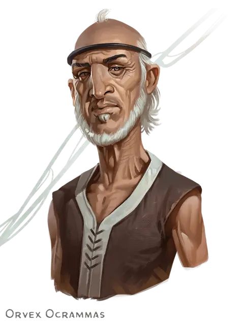

Орвекс Окраммус
Orvex Ocrammas
Средний Гуманоид, нейтральный, именной НИП

Класс Доспеха 12
Хиты 27 (6к8)
Скорость 30 футов
| мод | спас | ||
|---|---|---|---|
| СИЛ | 10 | +0 | +0 |
| ЛОВ | 15 | +2 | +2 |
| ТЕЛ | 10 | +0 | +0 |
| мод | спас | ||
|---|---|---|---|
| ИНТ | 12 | +1 | +1 |
| МДР | 14 | +2 | +2 |
| ХАР | 16 | +3 | +3 |
Навыки Восприятие +6, Ловкость рук +4, Обман +5, Проницательность +4, Расследование +5, Скрытность +4, Убеждение +5
Чувства пассивное Восприятие 16
Языки Общий, Язык Грунгов
Опасность 1 (200 опыта)
Бонус мастерства +2
Особенности
Хитрое действие. Орвекс может в каждом своём ходу бонусным действием совершать Засаду, Отход или Рывок.
Скрытая атака (1/ход). Орвекс причиняет дополнительный урон 7 (2к6), если попадает по цели атакой оружием, совершённой с преимуществом к броску атаки, или же если цель находится в пределах 5 футов от дееспособного союзника Орвекса, и Орвекс совершал бросок атаки без помехи.
Действия
Мультиатака. Орвекс совершает две рукопашные атаки.
Короткий меч. Рукопашная атака оружием: +4 к попаданию, досягаемость 5 футов, одна цель. Попадание: Колющий урон 5 (1к6 + 2).
Ручной арбалет. Дальнобойная атака оружием: +4 к попаданию, дистанция 30/120 футов, одна цель. Попадание: Колющий урон 5 (1к6 + 2).
Описание
Во время атаки, под обрушившейся частью стены, взрывом был похоронен член экспедиции Красных Волшебников. Орвекс умирает от жажды и истощения. Когда персонажи проводят поиск поблизости, они слышат, как он кричит о помощи из-под щебня. Если персонажи освобождают Орвекса, он просит присоединиться к их группе, пока не найдёт убежище.
Орвекс служит писарем и переводчиком для Красных волшебников. Он прагматичный, лысеющий человек, ему около сорока, он служил Красным Волшебникам, потому что, как он выразился, они хорошо платят.
У него осталось 3 хита, а также у него 3 уровня истощения (Помехи при проверках характеристик, скорость уменьшена вдвое и помехи при бросках атаки и спасбросках).